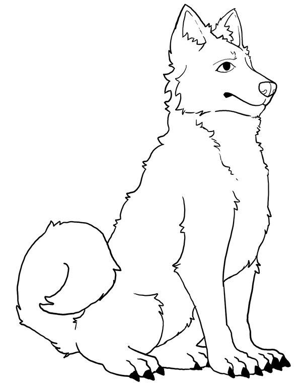

How to Draw A Simple Dog
By Griffin Key
Introduction:
Welcome to the Simple Dog tutorial, dogs come in all shapes and sizes, but today we'll go with a popular breed. To keep things easy the dog we are gonna be drawing this time is a husky. Each step will be broken up into 2 to 4 parts. Go on to step 1 to start.